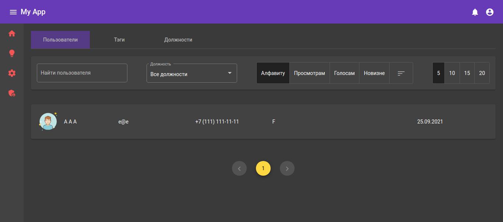

<mat-card>
    <mat-card-content>
        <h2 class="silver">Внешний вид</h2>
        <div fxLayout.xs="column" fxLayoutGap.xs="5%" fxLayout.gt-xs="row">
            <div class="col" fxLayout.xs="column" fxLayout.gt-xs="row" fxLayoutGap="10%" fxFlex>
<!--                <mat-slide-toggle [checked]="darkMode" (change)="toggle()" fxFlex="fit-content">-->
<!--                    Темная тема-->
<!--                </mat-slide-toggle>-->
                <mat-card fxFlex="45%" [ngStyle]="darkMode ? {} : {border: '4px solid #5c6bc0'}" (click)="changeLightMode()">
                    
                </mat-card>
                <mat-card fxFlex="45%" [ngStyle]="darkMode ? {border: '4px solid #5c6bc0'} : {}" (click)="changeDarkMode()">
                    
                </mat-card>
            </div>
        </div>
    </mat-card-content>
</mat-card>